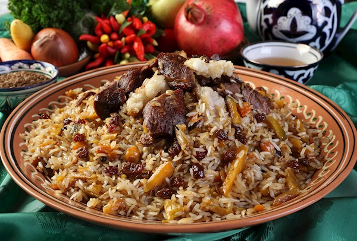

The national dish of Uzbekistan - Palov

Uzbekistan's signature dish is palov.
Plov is key dish in the Uzbek cuisine. There are about 200 different varieties of Plov.
Depending on the variety you make, it is seen as everyday, special or occasional dish.
Ingredients
- 200 ml oil
- 500 g lamb or beef
- 700 g carrots
- 2 onions
- 100 g chickpeas canned rinsed and drained. but if possible use dried that have been soaked in warm water for
8 hours
- water
- 150 g raisins
- 2 garlic heads unpeeled
- 500 g rice long-grained
- 1 tbsp salt
- 1 tbsp coriander ground
- 2 tbsp turmeric
- 1 tsp cumin seeds
Steps
- Dice the onions, slice the carrots in long thin strips and cut the meat in big chunks
- On high heat, heat the oil in a big pot and add the meat until brown on all sides
- Add the onions, continue frying
- When the onions are light brown, add the carrots. Fry until carrots are half cooked
- Add 500 ml water together with the chickpeas
- Bring to a boil, reduce the heat, add in the garlic heads and let cook for 15 minutes.
- Add the raisins. Continue cooking for another 5 minutes.
- Add turmeric, cumin, coriander and salt, stir well.
- Take out garlic heads, add the rice; layer it evenly on top of the carrots, then place the garlic heads on
top of the rice layer.
- Add enough water to cover the surface of rice for a little less than 2 cm.
- Set the heat on medium high and wait until all the water is soaked by rice, salt to taste.
- Mix only the top of the rice and close the lid, reduce the heat on very low.
- After 15 minutes, open the lid and again mix only the top of the rice, close the lid and then cook for
another 10
minutes.
- When rice is cooked, remove from the heat and gently mix all the ingredients together.
- Serve in large flat plate, along with fresh salad.